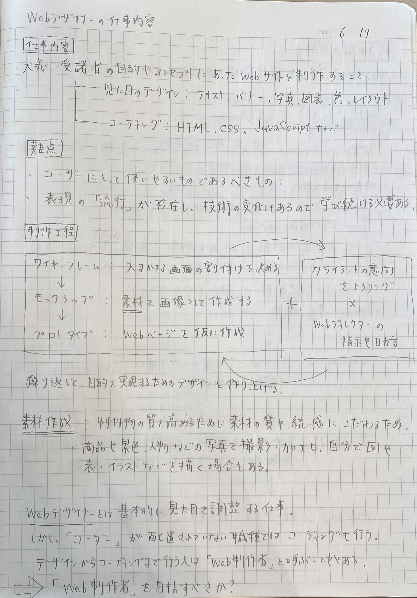
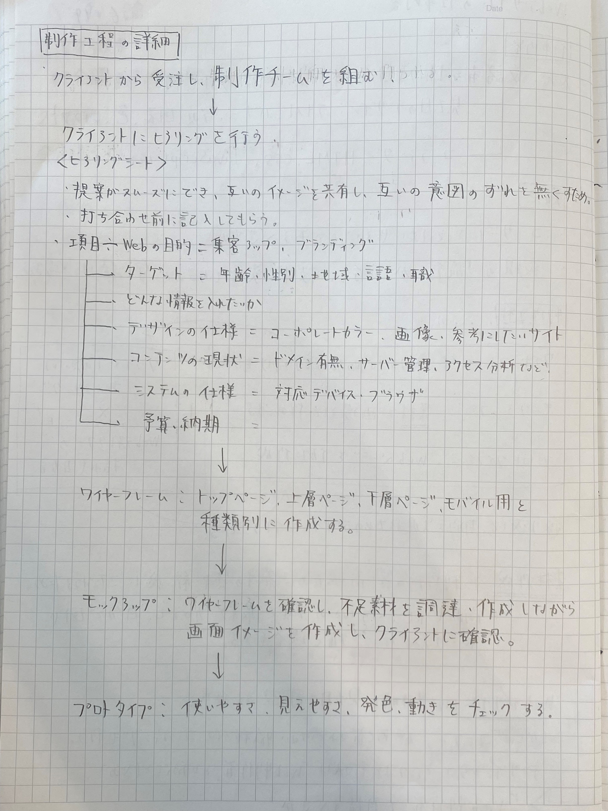

テーマについて
テーマ：デザイナーのポートフォリオを作る
経緯
バイトの先輩に将来デザイナーになった時使えるウェブポートフォリオを作りたいと話しており、
ホームページの知識はほぼないが、共闘してくれるので挑戦することにした。
取り組む目的
1.パートナーと同じ目的を持って１つのモノを作り上げる経験を通して１人で作れないものを作ってみたい
2.将来デザインに関わる仕事をしたいので、デザイナーの視点と考えを知りたい
チームで取り組む時に相手の意見を取り入れることが苦手な私にとっていい経験になると思う。
パートナー兼クライアントの紹介
伊藤君
所属：東京工科大学 デザイン学部の４年生
中高野球部で、大学浪人中に絵を書きたいと思いデザイン学部に志望転向し、入学。
デザイン会社に内定後、現在は卒業制作でアニメーション制作に取り組んでいる。
制作の進め方
このウェブページを作ることを始めとして、ホームページ制作に関わる仕事を受けられたらいいなと思っている
ので、実際にウェブデザイナーはどんな仕事内容や工程を踏んでいるのかを調べた。
大まかには、「ヒアリング→ワイヤーフレーム→モックアップ→プロトタイプ」の流れを繰り返す。
制作過程でその都度確認し、受託者の目的やコンセプトにあったウェブサイトを制作することが目的です。
これがチームでの動きになると上流工程と下流工程にわかれ、前者はクライアントに対してどんな価値を創造するか
や、ヒアリングを通して仕様書を作成します。その仕様書をもとに制作を行うのが後者です。
下流工程にはウェブデザイナーとコーダーがそれぞれいますが、両方行えるコーダーが主流になってきているようです。
